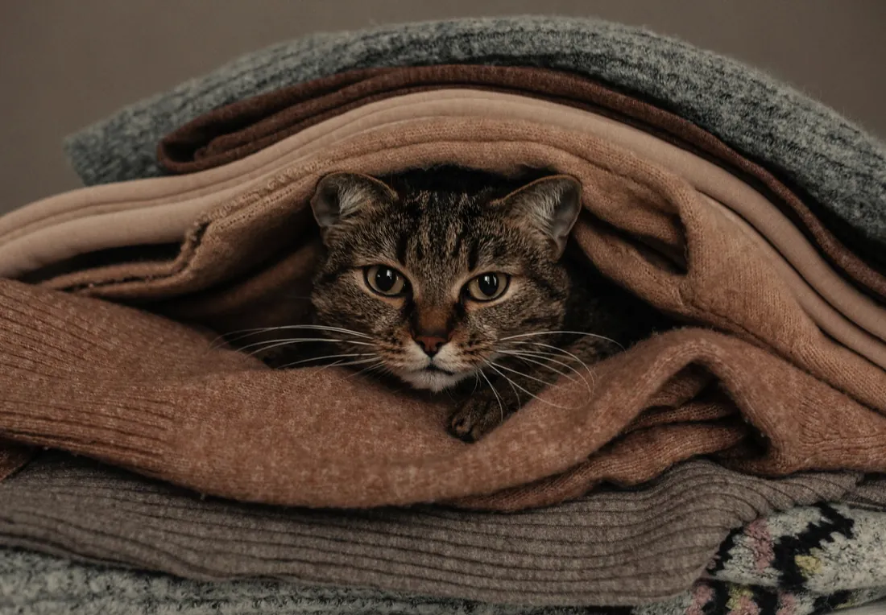

Durchfall und Erbrechen
Ein Tier, das erbricht oder Durchfall hat, verliert schnell Flüssigkeit, eine Katze oder ein kleiner Hund schon innerhalb eines Tages. Ich suche bei Ihnen zu Hause nach der Ursache und gebe Ihrem Tier Flüssigkeit, wenn es sie braucht.
Woran Sie es merken: Erbricht · Wässriger Kot · Frisst nicht

- Im Erbrochenen oder im Kot ist Blut, oder der Kot ist schwarz wie Teer.
- Ihr Tier erbricht mehrmals in wenigen Stunden und behält auch Wasser nicht bei sich.
- Sie vermuten, dass es etwas Giftiges gefressen oder einen Gegenstand verschluckt hat.
- Ihr Tier ist sehr jung oder sehr alt, oder es hat eine Vorerkrankung wie Diabetes.
- Es liegt teilnahmslos da, oder sein Zahnfleisch ist blass.
Was ich bei Ihnen mache
Zuerst frage ich nach. Seit wann geht es Ihrem Tier schlecht, wie oft hat es erbrochen, was hat es zuletzt gefressen, trinkt es noch? Vieles klärt sich schon im Gespräch.
Dann untersuche ich Ihr Tier in Ruhe. Ich taste den Bauch ab, messe die Temperatur und sehe mir Schleimhäute und Haut an. Daran erkenne ich, wie viel Flüssigkeit ihm fehlt.
Fehlt ihm Flüssigkeit, bekommt es eine Infusion, auf dem Sofa oder in seinem Körbchen. Gegen Übelkeit und Schmerzen gebe ich Medikamente aus meiner tierärztlichen Apotheke. Wenn nötig nehme ich Blut ab und lasse es im Labor untersuchen.
Zum Schluss bekommen Sie einen Plan für die nächsten Tage: was Ihr Tier fressen darf und ab wann es wieder sein normales Futter bekommt.
Besteht der Verdacht auf einen verschluckten Gegenstand, braucht Ihr Tier Röntgen oder Ultraschall. Dann organisiere ich die Überweisung an eine Klinik in Mannheim und übernehme die Nachsorge.
Bis ich bei Ihnen bin
- Lassen Sie frisches Wasser stehen. Futter geben Sie bitte erst wieder, wenn ich Ihr Tier gesehen habe.
- Geben Sie keine Medikamente aus Ihrer eigenen Hausapotheke. Ibuprofen und Paracetamol sind für Hunde und Katzen giftig.
- Fotografieren Sie Erbrochenes und Kot, oder heben Sie eine kleine Probe in einer Tüte auf.
- Hat Ihr Tier etwas Ungewöhnliches gefressen, legen Sie mir die Verpackung oder die Reste hin.
Was auf Sie zukommt
Ich rechne nach der Gebührenordnung für Tierärzte ab, dazu kommt die Hausbesuchsgebühr. Bevor ich behandle, sage ich Ihnen, womit Sie rechnen müssen.
Alles zur AbrechnungHäufige Fragen
Wann ist Durchfall harmlos?
Hat Ihr Tier einmal Durchfall, frisst aber und ist munter, beobachten Sie es einen Tag lang. Hält der Durchfall an oder kommt Erbrechen dazu, rufen Sie mich an. Bei Welpen und Kitten warten Sie bitte nicht.
Darf ich Schonkost geben?
Erst nach der Untersuchung. Ich sage Ihnen dann, was Ihr Tier fressen darf und in welcher Menge.
Muss mein Tier in die Klinik?
Nur wenn es Röntgen, Ultraschall oder eine Operation braucht. Alles andere behandle ich bei Ihnen zu Hause.
[FEHLT: fachliche Freigabe der Texte durch Herrn Al Saeed]
Ich komme zu Ihnen nach Hause.
Rufen Sie an oder fragen Sie einen Termin an. Mein Team meldet sich so schnell wie möglich und macht mit Ihnen eine Uhrzeit aus.